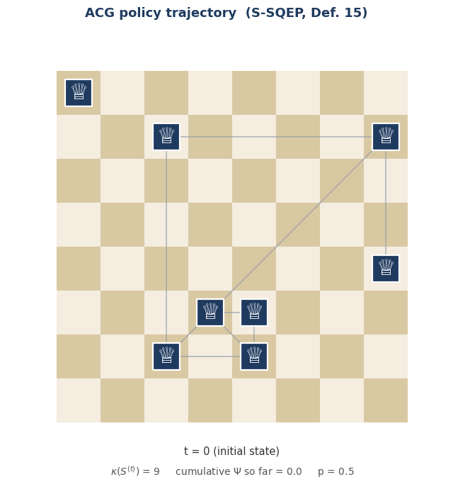
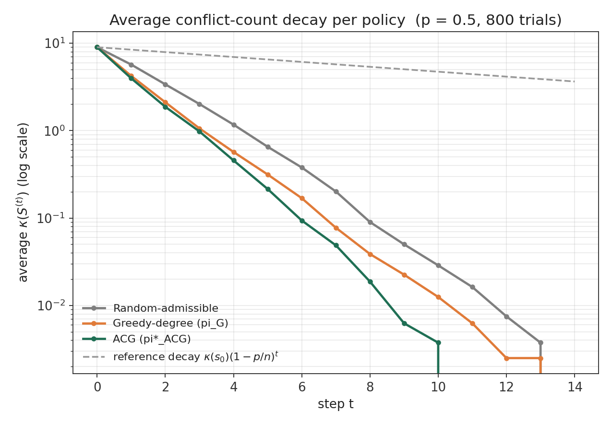
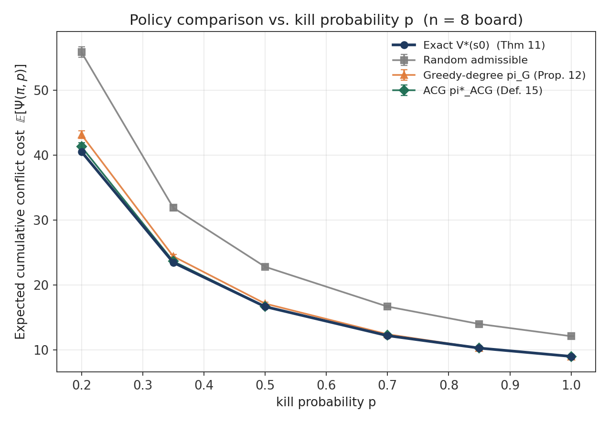
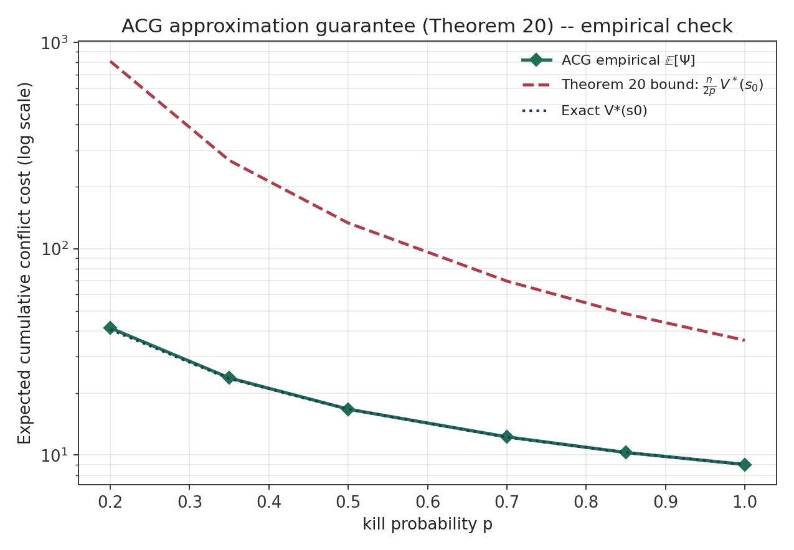

The classical n-queens puzzle asks how to place n queens on a board so that no two attack each other — a static, deterministic question with a fixed answer (92 solutions for n = 8). This paper asks a different kind of question: what if the queens are already on the board, already attacking each other, and one by one they start eliminating their rivals — but every elimination attempt only succeeds with some probability p? Who should act, and in what order, to clear the board as efficiently as possible?
I call this the Stochastic Sequential Queens Elimination Problem (S-SQEP). It turns a combinatorial placement puzzle into a sequential decision problem: an activation policy chooses which queen acts next, that queen simultaneously attacks every rival in its unblocked line of sight, and each attack independently succeeds with probability p. The goal is to minimize the expected cumulative number of conflicts along the way — not just at the end.

Why the multi-kill structure matters
The key modeling twist is that activation is a simultaneous multi-kill event. When a queen is activated, every queen in its unblocked neighborhood is attacked at once, each independently — so a single step can eliminate zero, one, or several rivals together. This is different from sequential single-target capture models, where an activated agent removes exactly one opponent. The multi-kill structure creates combinatorial dependence between conflict pairs and a much richer space of transitions, which is what makes the problem interesting as an MDP rather than a simple shortest-path recursion.
Formulating it as an MDP
The board state is the surviving set of queens together with their (fixed) positions. The conflict count of a state, written \(\kappa(s)\), counts the unordered pairs of queens that can still attack each other with a clear line of sight. A policy \(\pi\) incurs the current conflict count as a stage cost at every step, and the process stops once the board reaches a conflict-free state. The objective is the total expected conflict incurred along the way:
\[ \Psi(\pi, p) := \sum_{t=0}^{\tau - 1} \kappa\big(S^{(t)}\big), \qquad V^{*}(s) := \inf_{\pi} \; \mathbb{E}_{\pi}\big[\Psi(\pi, p) \mid S^{(0)} = s\big]. \]
Here \(\tau\) is the (random) stopping time at which the board becomes conflict-free. Minimizing \(\Psi\) means caring about the whole trajectory, not only how many queens are left when the process ends.
The paper shows this process always terminates: under any policy that never wastes a turn on an idle queen (an admissible policy), the board reaches a conflict-free state almost surely, with expected stopping time at most \((n-1)/p\). On the finite reachable state space, the problem satisfies the standard stochastic-shortest-path regularity conditions, which gives existence of an optimal stationary deterministic policy and a Bellman optimality equation in the usual sense.
The obvious heuristic isn't optimal
A natural first guess is to always activate whichever queen currently threatens the most rivals — a greedy-by-degree policy. It turns out this is provably suboptimal for \(p < 1\): the paper gives an explicit four-queen configuration where activating the highest-degree queen leaves a strictly larger expected cost than activating a lower-degree one, because degree alone ignores how much overlap there is between a queen's targets and the rest of the conflict graph. Getting the trade-off right requires looking at the entire trajectory cost, not just the immediate neighborhood size.
Adaptive Coverage Greedy (ACG)
To fix this, the paper introduces Adaptive Coverage Greedy (ACG): instead of maximizing raw degree, ACG activates the queen that maximizes the expected one-step conflict reduction,
\[ G(s, a) := \mathbb{E}\Big[\kappa(s) - \kappa\big(s \setminus Y^{(t)}\big) \;\Big|\; S^{(t)} = s,\ \sigma_t = a\Big], \]
which has a clean closed form: a conflict pair contributes \(1-(1-p)^2\) to the score if both its queens are in the acting queen's neighborhood, exactly \(p\) if only one is, and \(0\) otherwise. This closed form is what lets ACG correctly discount the double-counting that trips up the plain greedy-by-degree rule.
The central theoretical result is that ACG comes with a provable performance guarantee, not just good empirical behavior:
For every non-absorbing initial state and every \(p \in (0, 1]\), \[ \mathbb{E}_{\pi_{\mathrm{ACG}}}\big[\Psi(\pi_{\mathrm{ACG}}, p)\big] \;\le\; \frac{n}{2p}\, V^{*}(s_0). \]
The proof rests on a gain lower bound — a pigeonhole argument on the attack graph shows that the best available score is always at least \(\tfrac{2p}{n}\kappa(s)\) — which turns into a geometric decay bound on the expected conflict count and, after summing over the trajectory, the ratio above. The bound is tight: it is approached exactly when the conflict graph looks like a perfect matching and \(p \to 0^+\).



The deterministic case, exactly
Setting \(p = 1\) collapses S-SQEP to a deterministic elimination problem, for which the paper gives a mixed-integer programming formulation. Binary variables track which queens survive, which queen is activated at each step, and which attacking pairs are currently unblocked, with a set of linear constraints proven to encode the blocking logic exactly. Solving this MIP gives an exact optimal elimination order for \(p=1\) and, since \(\Psi^{\star}(1) \le \Psi^{\star}(p)\) for all \(p<1\), also supplies a valid lower bound usable for pruning in stochastic instances.
Takeaways
Three things I find compelling about this formulation: first, the multi-kill mechanism is a small modeling change with real structural consequences — it's what breaks simple greedy heuristics and forces a genuinely trajectory-aware analysis. Second, ACG shows that you can get a closed-form, cheap-to-compute heuristic that still carries a worst-case approximation guarantee, which is a nice middle ground between exact MDP solving and unprincipled heuristics. Third, the \(n\)-queens board turns out to be a surprisingly clean testbed for this kind of stochastic, elimination-based decision-making — simple enough to reason about exactly for small boards, rich enough that the greedy baseline already fails.